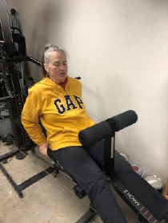

Hobbies
While Growing Up...
Singing/Dancing
Jennifer grew up with a passion for singing and dancing. She did this with the campfire girls, and she also enjoyed doing it with other friends and family. Jennifer also participated in other music-related activities, such as playing the piano, sometimes in duets with her mother and sister. Her singing experiences included concerts with the Little Ambassadors of Shanghai and a concert for the Centennial Celebration in Pasadena. She also enjoys listening to energetic music while exercising, especially Abba.
Attending Camps
Jennifer had many new experiences when attending camps throughout her schooling, including canoeing. She was willing to help the others out with their tasks, giving her the experience of pursuing a goal, trying new things, and not giving up. An example of this is what she helped portage a canoe, which had 240 rods in it. While attending school, she went to Ore, Minnesota as a camper. During the second session there, she worked in the office. The night after her high school graduation, she left for Ore, Minnesota again.
Current Hobbies:
Cooking
Jennifer enjoys cooking for her family, especially when visiting extended family members. She frequently cooks chocolate-chip bars, chocolate-chip blondies, and other tasty treats. She especially likes to do it in cooler weather. She uses her attention to detail to make these recipes the way she and her family like it.
Exercising
Jennifer walks and lifts weights frequently throughout the day. Her goal is to stay in shape and improve her health. She applies the principle that she knows that she can hit her goal if she keeps at it. This involves perseverance and stepping out of her comfort zone from time to time.
Computer
Jennifer goes on her computer every day to find ways to save money for her family. She does this by doing surveys to get rewards, entering sweepstakes, and clipping coupons. She uses her speed, memory, and attention to detail to help her with this, and she is also a fast typist.